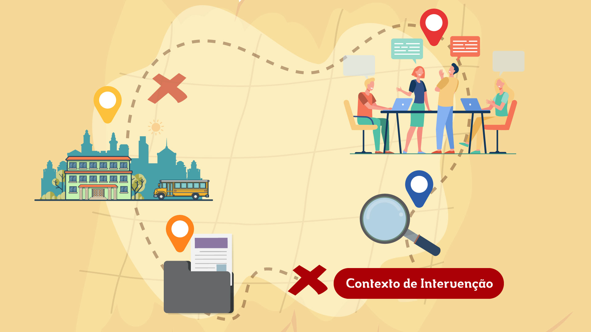

Agora que você já sabe o que deve buscar descobrir no contexto, vejamos como fazer isso.
Clique nos botões sobre a imagem para descobrir:

-
Observação dos espaços e da rotina (atividades regulares, eventos, calendário, entre outros) que podem representar oportunidades para planejar a intervenção;
Close
-
Análise das ações de orientação profissional que a escola já realiza;
Close
-
Troca de ideias com colegas professores, gestores, orientadores e outras pessoas que atuam na escola (entrevistas individuais e coletivas, questionários, oficinas, grupos focais, etc.);
Close
-
Análise das relações que a escola estabelece com a comunidade do entorno, com organizações do mundo do trabalho e com instituições de ensino técnico (consulta a fontes como jornais, redes sociais, sites, etc.).
Close
Figura 01 - Fonte: Imagem produzida pela equipe gráfica do projeto
Além disso, é importante pesquisar iniciativas de referências para o seu projeto. Você pode utilizar os motores de busca na Internet, utilizando expressões relacionadas ao propósito do projeto e ao seu contexto de intervenção. Foi deste modo que localizamos boa parte das iniciativas que estão sendo comentadas ao longo deste curso. Se possível, experimente fazer buscas em outros idiomas, além do Português, assim, poderá conhecer iniciativas realizadas em outros países.